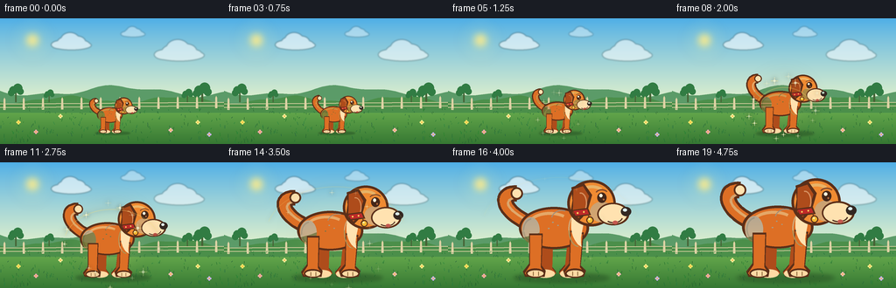
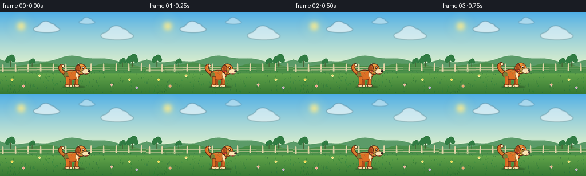

CODING AGENTS AS PIXEL WORLD MODELS
traex/GPT-5.6-Sol · instance_preservation_0047
点击播放 · 原生 RGB 像素
逐轮保存的候选
回放视频、检查图与代码变化。
每份候选均可单独播放。实际图片检查记录在下方工具轨迹中。
候选 01播放与检查图
点击播放 · 原生 RGB 像素


展开代码变化
--- 上一保存版本
+++ 本次保存版本
@@ -0,0 +1,346 @@
+from pathlib import Path
+import math
+import numpy as np
+from PIL import Image, ImageDraw, ImageFilter
+import artifact_io
+
+# Deterministic, supersampled vector animation.
+W, H, N = 256, 144, 20
+SS = 4
+RW, RH = W * SS, H * SS
+ROOT = Path(__file__).resolve().parent
+rng = np.random.default_rng(4701)
+
+
+def smoothstep(x):
+ x = max(0.0, min(1.0, x))
+ return x * x * (3.0 - 2.0 * x)
+
+
+def lerp(a, b, t):
+ return a + (b - a) * t
+
+
+def pt(x, y):
+ return (int(round(x * SS)), int(round(y * SS)))
+
+
+def box(x0, y0, x1, y1):
+ return (int(round(x0 * SS)), int(round(y0 * SS)), int(round(x1 * SS)), int(round(y1 * SS)))
+
+
+def cloud(draw, x, y, scale=1.0, alpha_fill=(255, 255, 255, 210)):
+ # Soft-edged cloud on an RGBA overlay.
+ blobs = [(-20, 2, 17, 8), (-11, -3, 14, 10), (0, -8, 18, 14),
+ (14, -4, 16, 11), (26, 2, 13, 8), (3, 3, 39, 9)]
+ for bx, by, rx, ry in blobs:
+ draw.ellipse(box(x + (bx-rx)*scale, y + (by-ry)*scale,
+ x + (bx+rx)*scale, y + (by+ry)*scale), fill=alpha_fill)
+
+
+def make_background():
+ arr = np.zeros((RH, RW, 3), dtype=np.uint8)
+ horizon = int(93 * SS)
+ # Fresh blue sky with a subtle warm horizon.
+ top = np.array([77, 174, 231], float)
+ bottom = np.array([221, 239, 205], float)
+ for y in range(horizon):
+ q = y / max(1, horizon - 1)
+ q = q ** 0.85
+ arr[y, :, :] = np.clip(top * (1-q) + bottom * q, 0, 255).astype(np.uint8)
+ # Meadow gradient.
+ gtop = np.array([116, 184, 84], float)
+ gbot = np.array([54, 120, 51], float)
+ for y in range(horizon, RH):
+ q = (y-horizon) / max(1, RH-horizon-1)
+ arr[y, :, :] = np.clip(gtop * (1-q) + gbot * q, 0, 255).astype(np.uint8)
+ im = Image.fromarray(arr, "RGB")
+
+ # Sun glow.
+ glow = Image.new("RGBA", (RW, RH), (0, 0, 0, 0))
+ gd = ImageDraw.Draw(glow, "RGBA")
+ sx, sy = 37, 25
+ for r in range(27, 5, -2):
+ a = int(3 + 27 * (1-r/27.0))
+ gd.ellipse(box(sx-r, sy-r, sx+r, sy+r), fill=(255, 240, 142, a))
+ gd.ellipse(box(sx-7, sy-7, sx+7, sy+7), fill=(255, 236, 137, 240))
+ glow = glow.filter(ImageFilter.GaussianBlur(4 * SS))
+ im = Image.alpha_composite(im.convert("RGBA"), glow)
+
+ # Clouds.
+ layer = Image.new("RGBA", (RW, RH), (0, 0, 0, 0))
+ ld = ImageDraw.Draw(layer, "RGBA")
+ cloud(ld, 80, 29, .58, (255, 255, 255, 155))
+ cloud(ld, 203, 40, .72, (255, 255, 255, 142))
+ cloud(ld, 151, 17, .35, (255, 255, 255, 105))
+ layer = layer.filter(ImageFilter.GaussianBlur(0.8 * SS))
+ im = Image.alpha_composite(im, layer)
+
+ d = ImageDraw.Draw(im, "RGBA")
+ # Layered hills, sampled as smooth silhouettes.
+ back = [(0, 91)]
+ for x in range(0, 257, 4):
+ y = 83 + 5*math.sin(x/29.0) + 2*math.sin(x/11.0)
+ back.append((x, y))
+ back += [(256, 103), (0, 103)]
+ d.polygon([pt(x, y) for x, y in back], fill=(91, 155, 104, 255))
+ front = [(0, 102)]
+ for x in range(0, 257, 4):
+ y = 93 + 3.5*math.sin(x/20.0 + .8) + 1.3*math.sin(x/7.5)
+ front.append((x, y))
+ front += [(256, 108), (0, 108)]
+ d.polygon([pt(x, y) for x, y in front], fill=(75, 143, 74, 255))
+
+ # Distant shrubs and little tree silhouettes.
+ for x, y, s in [(18, 86, .75), (231, 87, .9), (214, 89, .55), (56, 89, .5)]:
+ d.rectangle(box(x-1.1*s, y-3*s, x+1.1*s, 96), fill=(70, 99, 54, 255))
+ for ox, oy, rr in [(-4,-5,6),(3,-8,7),(7,-3,5),(-7,-1,5)]:
+ d.ellipse(box(x+(ox-rr)*s, y+(oy-rr)*s, x+(ox+rr)*s, y+(oy+rr)*s),
+ fill=(49, 124, 67, 255))
+
+ # Fence crossing the distant meadow.
+ fence = (223, 211, 165, 185)
+ d.line([pt(0, 98), pt(256, 96)], fill=fence, width=1*SS)
+ d.line([pt(0, 102), pt(256, 100)], fill=fence, width=1*SS)
+ for x in range(5, 256, 22):
+ y = 97.8 - 2*x/256
+ d.polygon([pt(x-1.2, y+7), pt(x-1.0, y-5), pt(x, y-7), pt(x+1.1, y-5), pt(x+1.2, y+7)], fill=fence)
+
+ # Grass blades and flowers are fixed across frames (identity-stable scene).
+ grass_rng = np.random.default_rng(20261110)
+ for _ in range(190):
+ x = float(grass_rng.uniform(0, 256))
+ y = float(grass_rng.uniform(103, 144))
+ length = float(grass_rng.uniform(1.0, 4.2) * (0.5 + (y-103)/60))
+ col = (35, int(grass_rng.integers(92, 132)), int(grass_rng.integers(42, 68)), int(grass_rng.integers(100, 205)))
+ d.line([pt(x, y), pt(x + grass_rng.uniform(-1.3, 1.3), y-length)], fill=col, width=max(1, SS//2))
+ for x, y, c in [(21,119,(255,232,103,230)), (41,130,(246,166,180,230)),
+ (226,119,(255,240,138,230)), (239,133,(205,179,247,230)),
+ (69,112,(250,239,157,200)), (195,128,(255,189,186,230))]:
+ d.line([pt(x, y+3), pt(x, y)], fill=(45,108,49,220), width=SS)
+ for a in range(0, 360, 90):
+ dx, dy = math.cos(math.radians(a))*1.6, math.sin(math.radians(a))*1.6
+ d.ellipse(box(x+dx-1, y+dy-1, x+dx+1, y+dy+1), fill=c)
+ d.ellipse(box(x-.7, y-.7, x+.7, y+.7), fill=(245,187,67,255))
+ return im.convert("RGB")
+
+
+BACKGROUND = make_background()
+
+
+def cubic(p0, p1, p2, p3, steps=22):
+ out = []
+ for i in range(steps + 1):
+ t = i / steps
+ u = 1-t
+ x = u**3*p0[0] + 3*u*u*t*p1[0] + 3*u*t*t*p2[0] + t**3*p3[0]
+ y = u**3*p0[1] + 3*u*u*t*p1[1] + 3*u*t*t*p2[1] + t**3*p3[1]
+ out.append((x, y))
+ return out
+
+
+def draw_dog(base, cx, ground, scale, phase, growth):
+ # All geometry is in one local coordinate system and transformed uniformly,
+ # making this visibly the exact same individual throughout the growth.
+ layer = Image.new("RGBA", (RW, RH), (0,0,0,0))
+ d = ImageDraw.Draw(layer, "RGBA")
+ s = scale
+ wag = math.sin(phase) * 4.0
+ bob = math.sin(phase*.55) * .35 * (1-growth)
+
+ def P(x, y): return pt(cx + x*s, ground + (y+bob)*s)
+ def B(x0,y0,x1,y1): return box(cx+x0*s, ground+(y0+bob)*s, cx+x1*s, ground+(y1+bob)*s)
+ def LW(v): return max(1, int(round(v*s*SS)))
+
+ outline = (91, 47, 25, 255)
+ orange = (221, 111, 37, 255)
+ orange_hi = (240, 139, 50, 255)
+ orange_dark = (174, 76, 27, 255)
+ cream = (255, 226, 176, 255)
+ pawcream = (255, 218, 164, 255)
+
+ # Contact shadow, widened with the dog.
+ shadow = Image.new("RGBA", (RW,RH), (0,0,0,0))
+ sd = ImageDraw.Draw(shadow,"RGBA")
+ sd.ellipse(B(-45, -3, 48, 5), fill=(28,66,30,105))
+ shadow = shadow.filter(ImageFilter.GaussianBlur(max(1, int(2.1*s*SS))))
+ base.alpha_composite(shadow)
+
+ # Tail behind body: a curled, recognisable plume.
+ tail_pts = cubic((-32,-53), (-56,-64), (-60,-86-wag), (-42,-85-wag), 25)
+ tail_screen = [P(x,y) for x,y in tail_pts]
+ d.line(tail_screen, fill=outline, width=LW(16), joint="curve")
+ d.line(tail_screen, fill=orange, width=LW(11), joint="curve")
+ hi_pts = cubic((-36,-57), (-52,-67), (-55,-78-wag), (-44,-81-wag), 20)
+ d.line([P(x,y) for x,y in hi_pts], fill=(244,148,64,180), width=LW(2.4))
+ # Cream tail tip, remains a consistent identifying mark.
+ endx, endy = tail_pts[-1]
+ d.ellipse(B(endx-6, endy-6, endx+6, endy+6), fill=outline)
+ d.ellipse(B(endx-4.2, endy-4.2, endx+4.2, endy+4.2), fill=cream)
+
+ # Far-side legs (darker for depth).
+ for poly in [ [(-17,-39),(-7,-38),(-8,-10),(-4,-5),(-7,0),(-23,0),(-25,-5),(-20,-12)],
+ [(8,-40),(17,-39),(13,-9),(18,-5),(16,0),(1,0),(-1,-5),(5,-12)] ]:
+ d.polygon([P(x,y) for x,y in poly], fill=outline)
+ inset = [(x*.96, y+1.5 if y<0 else y-1.3) for x,y in poly]
+ d.polygon([P(x,y) for x,y in inset], fill=orange_dark)
+ # pale toe cap
+ xs=[p[0] for p in poly]
+ d.ellipse(B(min(xs)+1,-7,max(xs)-1,1), fill=pawcream)
+
+ # Main body with outline and warm dimensional fill.
+ d.ellipse(B(-40,-68,28,-27), fill=outline)
+ d.ellipse(B(-37.5,-65.5,25.5,-29), fill=orange)
+ # Back highlight and haunch shading.
+ d.arc(B(-32,-63,12,-37), 198, 310, fill=(248,151,67,190), width=LW(3))
+ d.ellipse(B(-37,-58,-20,-33), fill=(185,76,28,95))
+ d.arc(B(-36,-57,-17,-34), 80, 260, fill=(131,57,25,110), width=LW(1.4))
+
+ # Near legs, with stout paw shapes.
+ hind = [(-30,-42),(-17,-42),(-18,-11),(-14,-6),(-15,0),(-34,0),(-36,-5),(-30,-13)]
+ front = [(10,-45),(23,-43),(20,-11),(25,-6),(23,0),(5,0),(3,-6),(9,-13)]
+ for poly in [hind, front]:
+ d.polygon([P(x,y) for x,y in poly], fill=outline)
+ inner = []
+ for x,y in poly:
+ # Contract shape gently toward its center.
+ mx = -24 if poly is hind else 14
+ inner.append((mx+(x-mx)*.84, y+1.7 if y<0 else y-1.4))
+ d.polygon([P(x,y) for x,y in inner], fill=orange)
+ d.ellipse(B(-33,-8,-15,1), fill=outline)
+ d.ellipse(B(-31.5,-6.2,-16.2,-.2), fill=pawcream)
+ d.ellipse(B(5,-8,24,1), fill=outline)
+ d.ellipse(B(6.5,-6.2,22.5,-.2), fill=pawcream)
+ # Toe separations.
+ for x in (-26,-21,12,17):
+ d.line([P(x,-4.8),P(x,-1.0)], fill=(177,97,62,170), width=LW(.8))
+
+ # Cream chest blaze, partly over body and under head.
+ chest = cubic((19,-62),(28,-55),(17,-41),(21,-29),16) + \
+ cubic((21,-29),(14,-32),(8,-45),(12,-61),16)
+ d.polygon([P(x,y) for x,y in chest], fill=cream)
+ d.arc(B(8,-63,28,-29), 93, 260, fill=(215,151,91,160), width=LW(1.0))
+
+ # Head and cheek.
+ d.ellipse(B(7,-94,54,-49), fill=outline)
+ d.ellipse(B(9.5,-91.5,51.5,-51.5), fill=orange_hi)
+ # Crown warm shadow and cheek highlight.
+ d.arc(B(14,-89,48,-58), 192, 305, fill=(255,174,78,210), width=LW(3))
+ d.ellipse(B(29,-73,52,-53), fill=(234,127,43,150))
+
+ # Floppy ear with persistent darker coloring and inner-ear patch.
+ ear_twitch = math.sin(phase*.8)*1.2*(1-growth*.35)
+ ear = [(11,-87),(23,-91),(31,-79+ear_twitch),(26,-62+ear_twitch),(18,-54),(10,-61),(12,-74)]
+ d.polygon([P(x,y) for x,y in ear], fill=outline)
+ ear2 = [(13,-85),(22,-88),(28,-78+ear_twitch),(23.5,-64+ear_twitch),(18,-57),(12.5,-62)]
+ d.polygon([P(x,y) for x,y in ear2], fill=orange_dark)
+ d.arc(B(14,-82,26,-61+ear_twitch), 260, 80, fill=(238,123,53,190), width=LW(1.2))
+
+ # Cream muzzle and distinct black nose.
+ d.ellipse(B(36,-72,67,-50), fill=outline)
+ d.ellipse(B(37.5,-70.5,65,-51.5), fill=cream)
+ d.ellipse(B(59,-68,69,-59), fill=(51,39,33,255))
+ d.ellipse(B(61,-66.5,65,-63.5), fill=(255,255,255,150))
+ # Smile and little lower lip.
+ d.arc(B(43,-64,61,-52), 12, 132, fill=(78,45,32,245), width=LW(1.2))
+ d.ellipse(B(51,-54.5,56,-51), fill=(196,67,58,220))
+
+ # Eye with catchlight. Brief natural blink, not an identity change.
+ blink = abs(phase - 2.85) < .12
+ if blink:
+ d.arc(B(36,-80,45,-73), 8, 172, fill=(66,37,25,255), width=LW(1.8))
+ else:
+ d.ellipse(B(36,-82,45,-72), fill=(68,39,25,255))
+ d.ellipse(B(38,-80.7,41.2,-77.3), fill=(255,249,222,255))
+ d.ellipse(B(41.3,-76,43,-74.2), fill=(180,94,45,230))
+ # Eyebrow gives a friendly expression.
+ d.arc(B(34,-85,47,-76), 205, 327, fill=(127,59,25,230), width=LW(1.2))
+
+ # Red collar, gold studs, and dangling round tag; all scale with dog.
+ collar = [(12,-65),(27,-67),(30,-60),(15,-58)]
+ d.polygon([P(x,y) for x,y in collar], fill=outline)
+ collar2 = [(13,-64),(26,-65.5),(28,-61),(15,-59.5)]
+ d.polygon([P(x,y) for x,y in collar2], fill=(190,42,40,255))
+ for x,y in [(17,-62),(23,-63)]:
+ d.ellipse(B(x-.8,y-.8,x+.8,y+.8), fill=(255,212,94,255))
+ d.line([P(27,-61), P(29,-55)], fill=(108,62,32,255), width=LW(1.1))
+ d.ellipse(B(25.5,-58.5,32.5,-51.5), fill=outline)
+ d.ellipse(B(26.5,-57.5,31.5,-52.5), fill=(246,184,49,255))
+ d.ellipse(B(27.5,-56.8,29.2,-55.1), fill=(255,244,170,220))
+
+ # A few permanent fur accents.
+ d.arc(B(-9,-65,12,-46), 195, 290, fill=(151,64,25,125), width=LW(1.0))
+ for x,y in [(-7,-53),(-2,-50),(-11,-47)]:
+ d.ellipse(B(x-.8,y-.5,x+.8,y+.5), fill=(128,58,28,105))
+
+ base.alpha_composite(layer)
+
+
+def add_magic(im, frame, cx, ground, scale, growth):
+ # Restrained golden motes emphasize transformation without hiding the dog.
+ if growth <= 0.03 or growth >= 0.985:
+ return
+ layer = Image.new("RGBA", (RW,RH), (0,0,0,0))
+ d = ImageDraw.Draw(layer, "RGBA")
+ intensity = math.sin(math.pi*growth) ** .65
+ # Two expanding elliptical arcs behind/around the subject.
+ ring_w = (30 + 48*growth) * scale
+ ring_h = (42 + 38*growth) * scale
+ alpha = int(72 * intensity)
+ d.arc(box((cx-ring_w)*SS/SS, (ground-ring_h-18*scale)*SS/SS,
+ (cx+ring_w)*SS/SS, (ground+4*scale)*SS/SS),
+ 195, 345, fill=(255,226,113,alpha), width=max(1,int(1.2*SS)))
+ # Deterministic orbiting sparkles.
+ for k in range(13):
+ a = k*2.399 + frame*.20
+ radius_x = (35 + (k%4)*8) * scale
+ radius_y = (45 + (k%3)*5) * scale
+ x = cx + math.cos(a)*radius_x
+ y = ground - 42*scale + math.sin(a)*radius_y
+ r = (0.65 + .55*((k*7)%5)/4) * (0.75+intensity)
+ aa = int((80 + 120*((k+2)%3)/2) * intensity)
+ d.line([pt(x-r*2.2,y),pt(x+r*2.2,y)], fill=(255,238,145,aa), width=max(1,SS//2))
+ d.line([pt(x,y-r*2.2),pt(x,y+r*2.2)], fill=(255,248,196,aa), width=max(1,SS//2))
+ d.ellipse(box((x-r*.7)*SS/SS,(y-r*.7)*SS/SS,(x+r*.7)*SS/SS,(y+r*.7)*SS/SS), fill=(255,255,221,aa))
+ # subtle blur bloom, then retain crisp stars through this layer itself
+ bloom = layer.filter(ImageFilter.GaussianBlur(2.4*SS))
+ bloom.putalpha(bloom.getchannel('A').point(lambda v: min(90, v)))
+ im.alpha_composite(bloom)
+ im.alpha_composite(layer)
+
+
+def render_frame(i):
+ t = i / (N-1)
+ # A short readable small hold and large settle; smooth eased transformation.
+ growth = smoothstep((t - 0.075) / 0.85)
+ scale = lerp(0.43, 1.20, growth)
+ # A tiny elastic finish, never enough to suggest a different dog.
+ if growth > .82:
+ scale += 0.012 * math.sin((growth-.82)/.18*math.pi*2) * (1-growth)/.18
+ cx = 128.0
+ ground = 131.0
+ phase = i * 0.30
+ frame = BACKGROUND.convert("RGBA")
+ # Aura behind dog at peak change.
+ if 0.08 < growth < .97:
+ aura = Image.new("RGBA", (RW,RH), (0,0,0,0))
+ ad = ImageDraw.Draw(aura,"RGBA")
+ intensity = math.sin(math.pi*growth)
+ rw, rh = 47*scale, 57*scale
+ ad.ellipse(box(cx-rw, ground-rh*1.62, cx+rw, ground+rh*.08), fill=(255,229,126,int(22*intensity)))
+ aura = aura.filter(ImageFilter.GaussianBlur(11*SS))
+ frame.alpha_composite(aura)
+ draw_dog(frame, cx, ground, scale, phase, growth)
+ add_magic(frame, i, cx, ground, scale, growth)
+ # Supersampled downsampling yields clean, cinematic edges.
+ return np.asarray(frame.convert("RGB").resize((W,H), Image.Resampling.LANCZOS), dtype=np.uint8)
+
+
+def main():
+ frames = np.stack([render_frame(i) for i in range(N)], axis=0)
+ artifact_io.save(frames, ROOT)
+ print(f"saved {frames.shape[0]} RGB frames at {frames.shape[2]}x{frames.shape[1]}")
+
+
+if __name__ == "__main__":
+ main()
可观测工具轨迹
实际执行的命令与返回图片。
命令 1exit 0
/bin/bash -lc "cat GENERATION_RULES.md && printf '\\n--- TASK SPEC ---\\n' && cat task_spec.json && printf '\\n--- PROMPT ---\\n' && cat prompt.txt"
命令 2exit 1
/bin/bash -lc "find . -maxdepth 2 -type f -printf '%p\\n' | sort && printf '\\n--- BINARIES ---\\n' && command -v ffmpeg && command -v python3"
命令 3exit 0
/bin/bash -lc "cat artifact_io.py && python3 - <<'PY' import sys mods=['numpy','PIL','imageio','cv2'] for m in mods: try: x=__import__(m); print(m,'OK',getattr(x,'__version__','')) except Exception as e: print(m,'NO',e) PY"
命令 4exit 0
/bin/bash -lc "cat > generate.py <<'PY'
from pathlib import Path
import math
import numpy as np
from PIL import Image, ImageDraw, ImageFilter
import artifact_io
# Deterministic, supersampled vector animation.
W, H, N = 256, 144, 20
SS = 4
RW, RH = W * SS, H * SS
ROOT = Path(__file__).resolve().parent
rng = np.random.default_rng(4701)
def smoothstep(x):
x = max(0.0, min(1.0, x))
return x * x * (3.0 - 2.0 * x)
def lerp(a, b, t):
return a + (b - a) * t
def pt(x, y):
return (int(round(x * SS)), int(round(y * SS)))
def box(x0, y0, x1, y1):
return (int(round(x0 * SS)), int(round(y0 * SS)), int(round(x1 * SS)), int(round(y1 * SS)))
def cloud(draw, x, y, scale=1.0, alpha_fill=(255, 255, 255, 210)):
# Soft-edged cloud on an RGBA overlay.
blobs = [(-20, 2, 17, 8), (-11, -3, 14, 10), (0, -8, 18, 14),
(14, -4, 16, 11), (26, 2, 13, 8), (3, 3, 39, 9)]
for bx, by, rx, ry in blobs:
draw.ellipse(box(x + (bx-rx)*scale, y + (by-ry)*scale,
x + (bx+rx)*scale, y + (by+ry)*scale), fill=alpha_fill)
def make_background():
arr = np.zeros((RH, RW, 3), dtype=np.uint8)
horizon = int(93 * SS)
# Fresh blue sky with a subtle warm horizon.
top = np.array([77, 174, 231], float)
bottom = np.array([221, 239, 205], float)
for y in range(horizon):
q = y / max(1, horizon - 1)
q = q ** 0.85
arr[y, :, :] = np.clip(top * (1-q) + bottom * q, 0, 255).astype(np.uint8)
# Meadow gradient.
gtop = np.array([116, 184, 84], float)
gbot = np.array([54, 120, 51], float)
for y in range(horizon, RH):
q = (y-horizon) / max(1, RH-horizon-1)
arr[y, :, :] = np.clip(gtop * (1-q) + gbot * q, 0, 255).astype(np.uint8)
im = Image.fromarray(arr, \"RGB\")
# Sun glow.
glow = Image.new(\"RGBA\", (RW, RH), (0, 0, 0, 0))
gd = ImageDraw.Draw(glow, \"RGBA\")
sx, sy = 37, 25
for r in range(27, 5, -2):
a = int(3 + 27 * (1-r/27.0))
gd.ellipse(box(sx-r, sy-r, sx+r, sy+r), fill=(255, 240, 142, a))
gd.ellipse(box(sx-7, sy-7, sx+7, sy+7), fill=(255, 236, 137, 240))
glow = glow.filter(ImageFilter.GaussianBlur(4 * SS))
im = Image.alpha_composite(im.convert(\"RGBA\"), glow)
# Clouds.
layer = Image.new(\"RGBA\", (RW, RH), (0, 0, 0, 0))
ld = ImageDraw.Draw(layer, \"RGBA\")
cloud(ld, 80, 29, .58, (255, 255, 255, 155))
cloud(ld, 203, 40, .72, (255, 255, 255, 142))
cloud(ld, 151, 17, .35, (255, 255, 255, 105))
layer = layer.filter(ImageFilter.GaussianBlur(0.8 * SS))
im = Image.alpha_composite(im, layer)
d = ImageDraw.Draw(im, \"RGBA\")
# Layered hills, sampled as smooth silhouettes.
back = [(0, 91)]
for x in range(0, 257, 4):
y = 83 + 5*math.sin(x/29.0) + 2*math.sin(x/11.0)
back.append((x, y))
back += [(256, 103), (0, 103)]
d.polygon([pt(x, y) for x, y in back], fill=(91, 155, 104, 255))
front = [(0, 102)]
for x in range(0, 257, 4):
y = 93 + 3.5*math.sin(x/20.0 + .8) + 1.3*math.sin(x/7.5)
front.append((x, y))
front += [(256, 108), (0, 108)]
d.polygon([pt(x, y) for x, y in front], fill=(75, 143, 74, 255))
# Distant shrubs and little tree silhouettes.
for x, y, s in [(18, 86, .75), (231, 87, .9), (214, 89, .55), (56, 89, .5)]:
d.rectangle(box(x-1.1*s, y-3*s, x+1.1*s, 96), fill=(70, 99, 54, 255))
for ox, oy, rr in [(-4,-5,6),(3,-8,7),(7,-3,5),(-7,-1,5)]:
d.ellipse(box(x+(ox-rr)*s, y+(oy-rr)*s, x+(ox+rr)*s, y+(oy+rr)*s),
fill=(49, 124, 67, 255))
# Fence crossing the distant meadow.
fence = (223, 211, 165, 185)
d.line([pt(0, 98), pt(256, 96)], fill=fence, width=1*SS)
d.line([pt(0, 102), pt(256, 100)], fill=fence, width=1*SS)
for x in range(5, 256, 22):
y = 97.8 - 2*x/256
d.polygon([pt(x-1.2, y+7), pt(x-1.0, y-5), pt(x, y-7), pt(x+1.1, y-5), pt(x+1.2, y+7)], fill=fence)
# Grass blades and flowers are fixed across frames (identity-stable scene).
grass_rng = np.random.default_rng(20261110)
for _ in range(190):
x = float(grass_rng.uniform(0, 256))
y = float(grass_rng.uniform(103, 144))
length = float(grass_rng.uniform(1.0, 4.2) * (0.5 + (y-103)/60))
col = (35, int(grass_rng.integers(92, 132)), int(grass_rng.integers(42, 68)), int(grass_rng.integers(100, 205)))
d.line([pt(x, y), pt(x + grass_rng.uniform(-1.3, 1.3), y-length)], fill=col, width=max(1, SS//2))
for x, y, c in [(21,119,(255,232,103,230)), (41,130,(246,166,180,230)),
(226,119,(255,240,138,230)), (239,133,(205,179,247,230)),
(69,112,(250,239,157,200)), (195,128,(255,189,186,230))]:
d.line([pt(x, y+3), pt(x, y)], fill=(45,108,49,220), width=SS)
for a in range(0, 360, 90):
dx, dy = math.cos(math.radians(a))*1.6, math.sin(math.radians(a))*1.6
d.ellipse(box(x+dx-1, y+dy-1, x+dx+1, y+dy+1), fill=c)
d.ellipse(box(x-.7, y-.7, x+.7, y+.7), fill=(245,187,67,255))
return im.convert(\"RGB\")
BACKGROUND = make_background()
def cubic(p0, p1, p2, p3, steps=22):
out = []
for i in range(steps + 1):
t = i / steps
u = 1-t
x = u**3*p0[0] + 3*u*u*t*p1[0] + 3*u*t*t*p2[0] + t**3*p3[0]
y = u**3*p0[1] + 3*u*u*t*p1[1] + 3*u*t*t*p2[1] + t**3*p3[1]
out.append((x, y))
return out
def draw_dog(base, cx, ground, scale, phase, growth):
# All geometry is in one local coordinate system and transformed uniformly,
# making this visibly the exact same individual throughout the growth.
layer = Image.new(\"RGBA\", (RW, RH), (0,0,0,0))
d = ImageDraw.Draw(layer, \"RGBA\")
s = scale
wag = math.sin(phase) * 4.0
bob = math.sin(phase*.55) * .35 * (1-growth)
def P(x, y): return pt(cx + x*s, ground + (y+bob)*s)
def B(x0,y0,x1,y1): return box(cx+x0*s, ground+(y0+bob)*s, cx+x1*s, ground+(y1+bob)*s)
def LW(v): return max(1, int(round(v*s*SS)))
outline = (91, 47, 25, 255)
orange = (221, 111, 37, 255)
orange_hi = (240, 139, 50, 255)
orange_dark = (174, 76, 27, 255)
cream = (255, 226, 176, 255)
pawcream = (255, 218, 164, 255)
# Contact shadow, widened with the dog.
shadow = Image.new(\"RGBA\", (RW,RH), (0,0,0,0))
sd = ImageDraw.Draw(shadow,\"RGBA\")
sd.ellipse(B(-45, -3, 48, 5), fill=(28,66,30,105))
shadow = shadow.filter(ImageFilter.GaussianBlur(max(1, int(2.1*s*SS))))
base.alpha_composite(shadow)
# Tail behind body: a curled, recognisable plume.
tail_pts = cubic((-32,-53), (-56,-64), (-60,-86-wag), (-42,-85-wag), 25)
tail_screen = [P(x,y) for x,y in tail_pts]
d.line(tail_screen, fill=outline, width=LW(16), joint=\"curve\")
d.line(tail_screen, fill=orange, width=LW(11), joint=\"curve\")
hi_pts = cubic((-36,-57), (-52,-67), (-55,-78-wag), (-44,-81-wag), 20)
d.line([P(x,y) for x,y in hi_pts], fill=(244,148,64,180), width=LW(2.4))
# Cream tail tip, remains a consistent identifying mark.
endx, endy = tail_pts[-1]
d.ellipse(B(endx-6, endy-6, endx+6, endy+6), fill=outline)
d.ellipse(B(endx-4.2, endy-4.2, endx+4.2, endy+4.2), fill=cream)
# Far-side legs (darker for depth).
for poly in [ [(-17,-39),(-7,-38),(-8,-10),(-4,-5),(-7,0),(-23,0),(-25,-5),(-20,-12)],
[(8,-40),(17,-39),(13,-9),(18,-5),(16,0),(1,0),(-1,-5),(5,-12)] ]:
d.polygon([P(x,y) for x,y in poly], fill=outline)
inset = [(x*.96, y+1.5 if y<0 else y-1.3) for x,y in poly]
d.polygon([P(x,y) for x,y in inset], fill=orange_dark)
# pale toe cap
xs=[p[0] for p in poly]
d.ellipse(B(min(xs)+1,-7,max(xs)-1,1), fill=pawcream)
# Main body with outline and warm dimensional fill.
d.ellipse(B(-40,-68,28,-27), fill=outline)
d.ellipse(B(-37.5,-65.5,25.5,-29), fill=orange)
# Back highlight and haunch shading.
d.arc(B(-32,-63,12,-37), 198, 310, fill=(248,151,67,190), width=LW(3))
d.ellipse(B(-37,-58,-20,-33), fill=(185,76,28,95))
d.arc(B(-36,-57,-17,-34), 80, 260, fill=(131,57,25,110), width=LW(1.4))
# Near legs, with stout paw shapes.
hind = [(-30,-42),(-17,-42),(-18,-11),(-14,-6),(-15,0),(-34,0),(-36,-5),(-30,-13)]
front = [(10,-45),(23,-43),(20,-11),(25,-6),(23,0),(5,0),(3,-6),(9,-13)]
for poly in [hind, front]:
d.polygon([P(x,y) for x,y in poly], fill=outline)
inner = []
for x,y in poly:
# Contract shape gently toward its center.
mx = -24 if poly is hind else 14
inner.append((mx+(x-mx)*.84, y+1.7 if y<0 else y-1.4))
d.polygon([P(x,y) for x,y in inner], fill=orange)
d.ellipse(B(-33,-8,-15,1), fill=outline)
d.ellipse(B(-31.5,-6.2,-16.2,-.2), fill=pawcream)
d.ellipse(B(5,-8,24,1), fill=outline)
d.ellipse(B(6.5,-6.2,22.5,-.2), fill=pawcream)
# Toe separations.
for x in (-26,-21,12,17):
d.line([P(x,-4.8),P(x,-1.0)], fill=(177,97,62,170), width=LW(.8))
# Cream chest blaze, partly over body and under head.
chest = cubic((19,-62),(28,-55),(17,-41),(21,-29),16) + \\
cubic((21,-29),(14,-32),(8,-45),(12,-61),16)
d.polygon([P(x,y) for x,y in chest], fill=cream)
d.arc(B(8,-63,28,-29), 93, 260, fill=(215,151,91,160), width=LW(1.0))
# Head and cheek.
d.ellipse(B(7,-94,54,-49), fill=outline)
d.ellipse(B(9.5,-91.5,51.5,-51.5), fill=orange_hi)
# Crown warm shadow and cheek highlight.
d.arc(B(14,-89,48,-58), 192, 305, fill=(255,174,78,210), width=LW(3))
d.ellipse(B(29,-73,52,-53), fill=(234,127,43,150))
# Floppy ear with persistent darker coloring and inner-ear patch.
ear_twitch = math.sin(phase*.8)*1.2*(1-growth*.35)
ear = [(11,-87),(23,-91),(31,-79+ear_twitch),(26,-62+ear_twitch),(18,-54),(10,-61),(12,-74)]
d.polygon([P(x,y) for x,y in ear], fill=outline)
ear2 = [(13,-85),(22,-88),(28,-78+ear_twitch),(23.5,-64+ear_twitch),(18,-57),(12.5,-62)]
d.polygon([P(x,y) for x,y in ear2], fill=orange_dark)
d.arc(B(14,-82,26,-61+ear_twitch), 260, 80, fill=(238,123,53,190), width=LW(1.2))
# Cream muzzle and distinct black nose.
d.ellipse(B(36,-72,67,-50), fill=outline)
d.ellipse(B(37.5,-70.5,65,-51.5), fill=cream)
d.ellipse(B(59,-68,69,-59), fill=(51,39,33,255))
d.ellipse(B(61,-66.5,65,-63.5), fill=(255,255,255,150))
# Smile and little lower lip.
d.arc(B(43,-64,61,-52), 12, 132, fill=(78,45,32,245), width=LW(1.2))
d.ellipse(B(51,-54.5,56,-51), fill=(196,67,58,220))
# Eye with catchlight. Brief natural blink, not an identity change.
blink = abs(phase - 2.85) < .12
if blink:
d.arc(B(36,-80,45,-73), 8, 172, fill=(66,37,25,255), width=LW(1.8))
else:
d.ellipse(B(36,-82,45,-72), fill=(68,39,25,255))
d.ellipse(B(38,-80.7,41.2,-77.3), fill=(255,249,222,255))
d.ellipse(B(41.3,-76,43,-74.2), fill=(180,94,45,230))
# Eyebrow gives a friendly expression.
d.arc(B(34,-85,47,-76), 205, 327, fill=(127,59,25,230), width=LW(1.2))
# Red collar, gold studs, and dangling round tag; all scale with dog.
collar = [(12,-65),(27,-67),(30,-60),(15,-58)]
d.polygon([P(x,y) for x,y in collar], fill=outline)
collar2 = [(13,-64),(26,-65.5),(28,-61),(15,-59.5)]
d.polygon([P(x,y) for x,y in collar2], fill=(190,42,40,255))
for x,y in [(17,-62),(23,-63)]:
d.ellipse(B(x-.8,y-.8,x+.8,y+.8), fill=(255,212,94,255))
d.line([P(27,-61), P(29,-55)], fill=(108,62,32,255), width=LW(1.1))
d.ellipse(B(25.5,-58.5,32.5,-51.5), fill=outline)
d.ellipse(B(26.5,-57.5,31.5,-52.5), fill=(246,184,49,255))
d.ellipse(B(27.5,-56.8,29.2,-55.1), fill=(255,244,170,220))
# A few permanent fur accents.
d.arc(B(-9,-65,12,-46), 195, 290, fill=(151,64,25,125), width=LW(1.0))
for x,y in [(-7,-53),(-2,-50),(-11,-47)]:
d.ellipse(B(x-.8,y-.5,x+.8,y+.5), fill=(128,58,28,105))
base.alpha_composite(layer)
def add_magic(im, frame, cx, ground, scale, growth):
# Restrained golden motes emphasize transformation without hiding the dog.
if growth <= 0.03 or growth >= 0.985:
return
layer = Image.new(\"RGBA\", (RW,RH), (0,0,0,0))
d = ImageDraw.Draw(layer, \"RGBA\")
intensity = math.sin(math.pi*growth) ** .65
# Two expanding elliptical arcs behind/around the subject.
ring_w = (30 + 48*growth) * scale
ring_h = (42 + 38*growth) * scale
alpha = int(72 * intensity)
d.arc(box((cx-ring_w)*SS/SS, (ground-ring_h-18*scale)*SS/SS,
(cx+ring_w)*SS/SS, (ground+4*scale)*SS/SS),
195, 345, fill=(255,226,113,alpha), width=max(1,int(1.2*SS)))
# Deterministic orbiting sparkles.
for k in range(13):
a = k*2.399 + frame*.20
radius_x = (35 + (k%4)*8) * scale
radius_y = (45 + (k%3)*5) * scale
x = cx + math.cos(a)*radius_x
y = ground - 42*scale + math.sin(a)*radius_y
r = (0.65 + .55*((k*7)%5)/4) * (0.75+intensity)
aa = int((80 + 120*((k+2)%3)/2) * intensity)
d.line([pt(x-r*2.2,y),pt(x+r*2.2,y)], fill=(255,238,145,aa), width=max(1,SS//2))
d.line([pt(x,y-r*2.2),pt(x,y+r*2.2)], fill=(255,248,196,aa), width=max(1,SS//2))
d.ellipse(box((x-r*.7)*SS/SS,(y-r*.7)*SS/SS,(x+r*.7)*SS/SS,(y+r*.7)*SS/SS), fill=(255,255,221,aa))
# subtle blur bloom, then retain crisp stars through this layer itself
bloom = layer.filter(ImageFilter.GaussianBlur(2.4*SS))
bloom.putalpha(bloom.getchannel('A').point(lambda v: min(90, v)))
im.alpha_composite(bloom)
im.alpha_composite(layer)
def render_frame(i):
t = i / (N-1)
# A short readable small hold and large settle; smooth eased transformation.
growth = smoothstep((t - 0.075) / 0.85)
scale = lerp(0.43, 1.20, growth)
# A tiny elastic finish, never enough to suggest a different dog.
if growth > .82:
scale += 0.012 * math.sin((growth-.82)/.18*math.pi*2) * (1-growth)/.18
cx = 128.0
ground = 131.0
phase = i * 0.30
frame = BACKGROUND.convert(\"RGBA\")
# Aura behind dog at peak change.
if 0.08 < growth < .97:
aura = Image.new(\"RGBA\", (RW,RH), (0,0,0,0))
ad = ImageDraw.Draw(aura,\"RGBA\")
intensity = math.sin(math.pi*growth)
rw, rh = 47*scale, 57*scale
ad.ellipse(box(cx-rw, ground-rh*1.62, cx+rw, ground+rh*.08), fill=(255,229,126,int(22*intensity)))
aura = aura.filter(ImageFilter.GaussianBlur(11*SS))
frame.alpha_composite(aura)
draw_dog(frame, cx, ground, scale, phase, growth)
add_magic(frame, i, cx, ground, scale, growth)
# Supersampled downsampling yields clean, cinematic edges.
return np.asarray(frame.convert(\"RGB\").resize((W,H), Image.Resampling.LANCZOS), dtype=np.uint8)
def main():
frames = np.stack([render_frame(i) for i in range(N)], axis=0)
artifact_io.save(frames, ROOT)
print(f\"saved {frames.shape[0]} RGB frames at {frames.shape[2]}x{frames.shape[1]}\")
if __name__ == \"__main__\":
main()
PY
python3 generate.py
ls -lh pixels.npz inspection.png transition_check.png index.html frames/00.png frames/19.png"命令 5exit 0
/bin/bash -lc "python3 - <<'PY'
from pathlib import Path
import json, numpy as np
from PIL import Image
p=Path('.')
spec=json.loads(Path('task_spec.json').read_text())
files=sorted((p/'frames').glob('*.png'))
assert len(files)==20, len(files)
a=np.stack([np.asarray(Image.open(f).convert('RGB')) for f in files])
assert a.shape==(20,144,256,3) and a.dtype==np.uint8
z=np.load('pixels.npz')['pixels']
assert z.shape==(144,256,20) and z.dtype==np.uint32
# Recover object area using orange coat color isolation; meadow/sky do not satisfy this range.
areas=[]; bboxes=[]
for fr in a:
r,g,b=fr[:,:,0],fr[:,:,1],fr[:,:,2]
mask=(r>155)&(g>50)&(g<175)&(b<95)&((r.astype(int)-g.astype(int))>55)
ys,xs=np.where(mask)
areas.append(int(mask.sum()))
bboxes.append((int(xs.min()),int(ys.min()),int(xs.max()),int(ys.max())))
# Consecutive-frame L1 changes, and border stability (small antialiasing aside all environment is static).
diffs=np.mean(np.abs(a[1:].astype(np.int16)-a[:-1].astype(np.int16)),axis=(1,2,3))
print('shape/dtype:',a.shape,a.dtype,'range',int(a.min()),int(a.max()))
print('orange area first/mid/last:',areas[0],areas[9],areas[-1], 'ratio',round(areas[-1]/areas[0],2))
print('orange bbox first:',bboxes[0],'last:',bboxes[-1])
print('frame-change mean range:',round(float(diffs.min()),3),round(float(diffs.max()),3),'unique hashes',len({hash(x.tobytes()) for x in a}))
print('npz tensor:',z.shape,z.dtype,'index present',Path('index.html').is_file())
assert areas[-1] > areas[0]*5.0
assert len({hash(x.tobytes()) for x in a})==20
# Confirm last orange coat remains same hue family as first.
for idx in [0,9,19]:
fr=a[idx]; r,g,b=fr[:,:,0],fr[:,:,1],fr[:,:,2]; m=(r>155)&(g>50)&(g<175)&(b<95)&((r.astype(int)-g.astype(int))>55)
print('frame',idx,'coat median RGB',tuple(np.median(fr[m],axis=0).astype(int)))
PY
# ensure generator remains deterministic and compilable
python3 -m py_compile generate.py
"保存候选 1 份；完成命令 5 次；可验证图片返回 0 张。原始 API 响应与完整日志保留在本地。